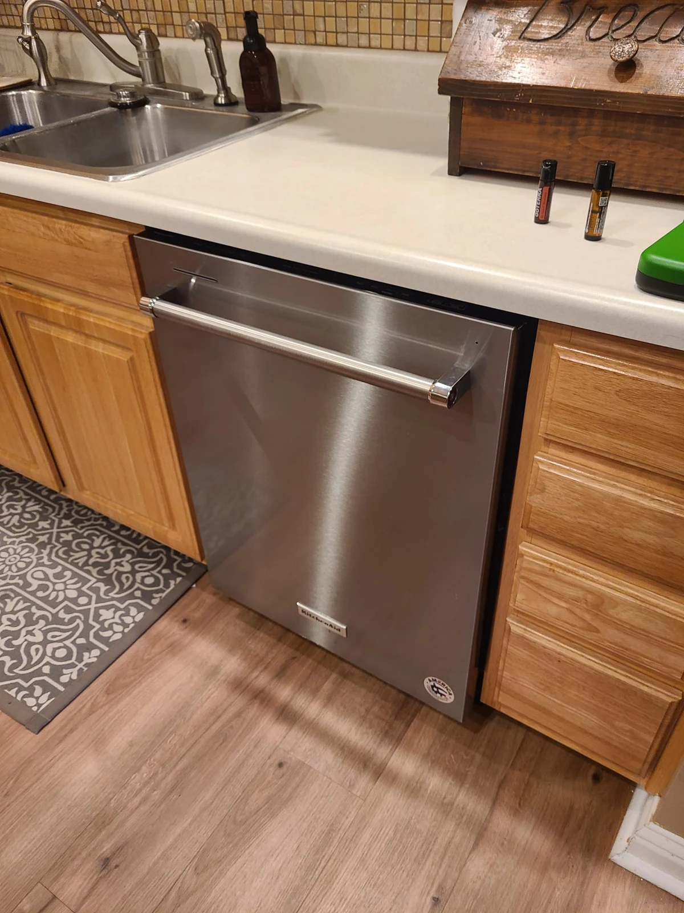
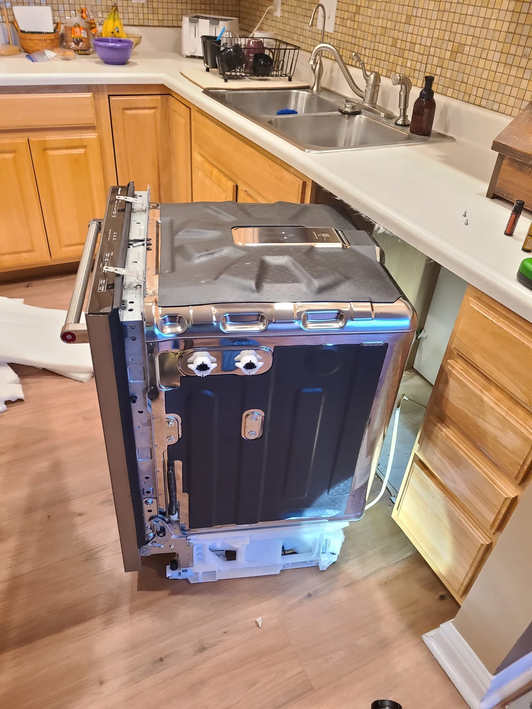
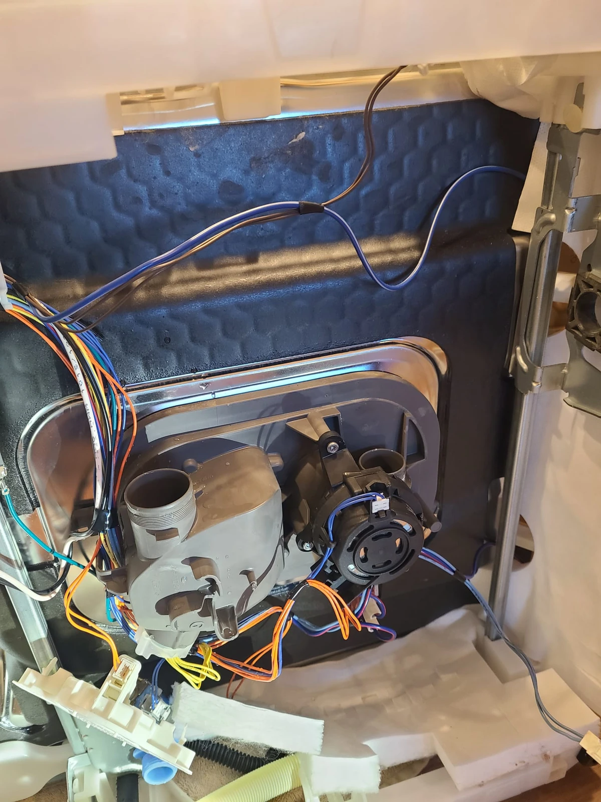
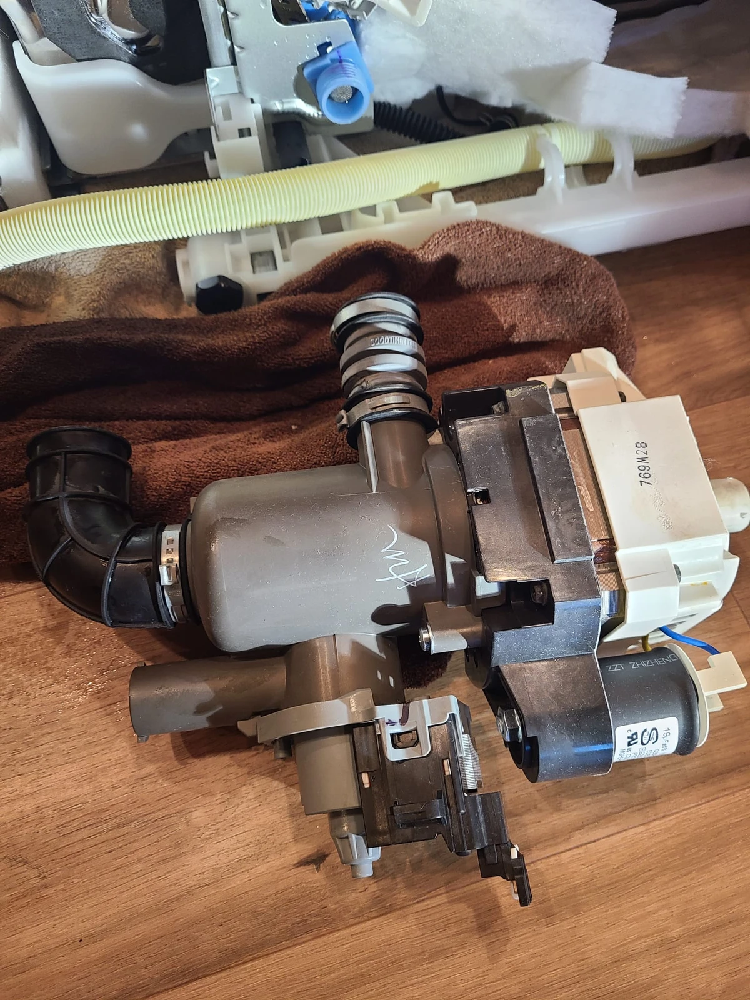
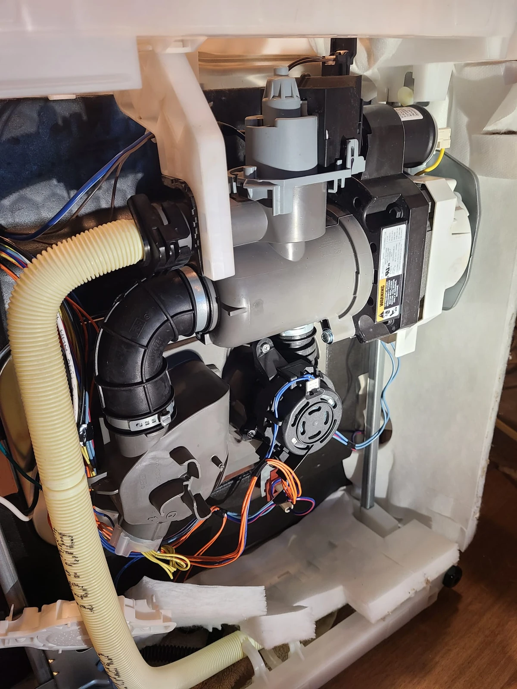
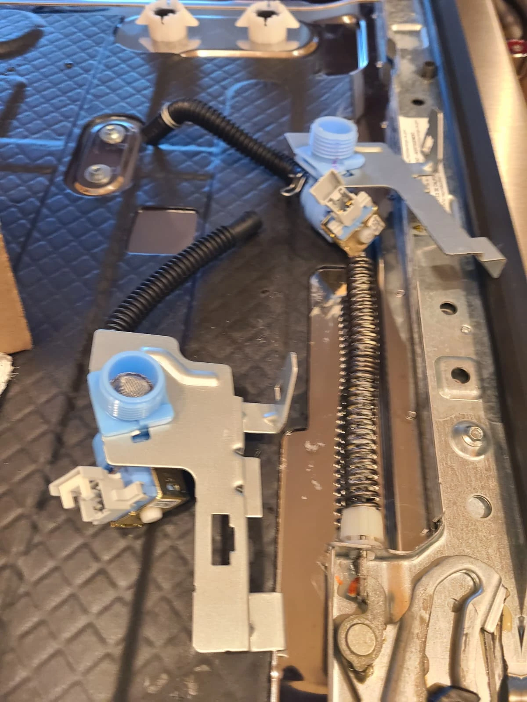
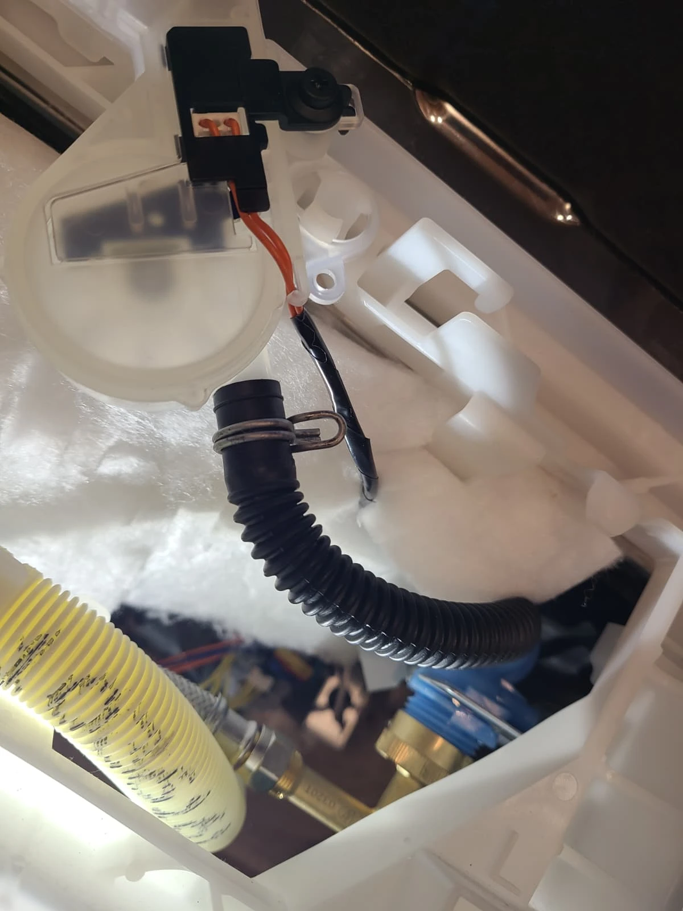
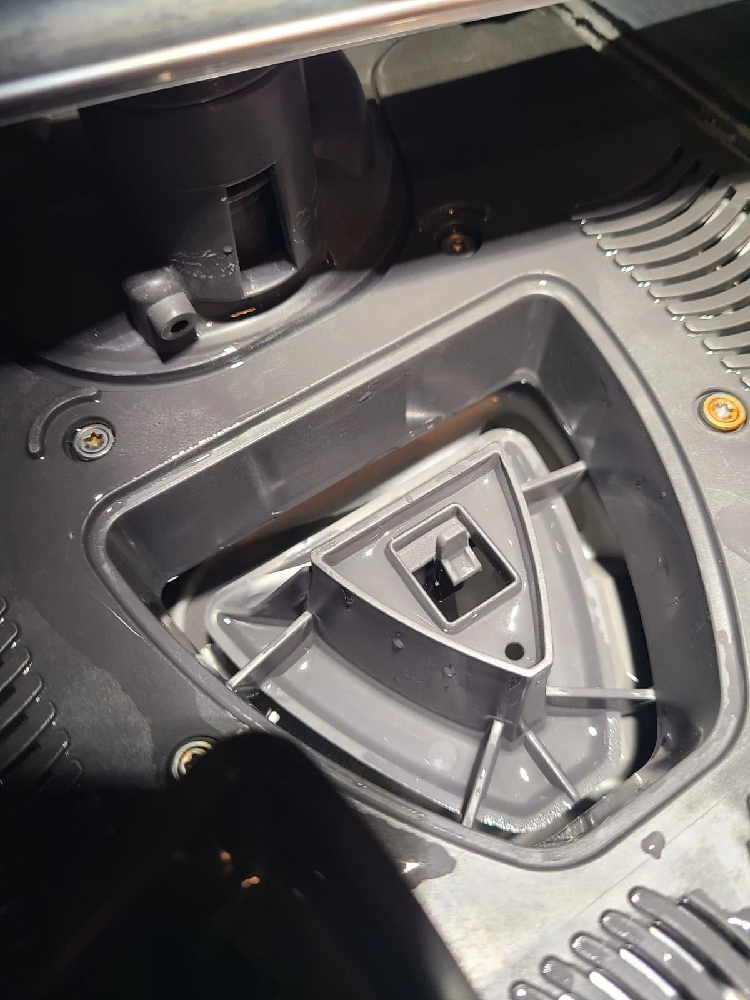

Dirty Dishes and a Dishwasher That Was Not Filling Properly
A homeowner in Noblesville, Indiana, called Alex Appliance Repair because their KitchenAid dishwasher was leaving dishes poorly washed. The customer also reported that the machine was not taking in enough water. Those two observations made this more than a general complaint about disappointing cleaning results: both filling and the washing action needed attention.
Diagnosis identified two components requiring replacement: the water inlet valve and the recirculation pump. We replaced both as part of the repair completed on October 30, 2026. Afterward, the dishwasher was tested, no errors were found, operation was normal, and the dishes were clean. This story follows the work using photographs from the actual service visit.
The Model Label: KitchenAid KDTM404KPS0
The appliance label confirms the model as KitchenAid KDTM404KPS0. The crop alongside this section comes directly from the original photograph. It keeps the model identification readable while leaving the serial-number line outside the image. The full model includes the final zero, an important detail when identifying the appliance for service.
When booking a dishwasher repair, a model number and a specific symptom are more useful than appearance alone. For this visit, the useful description was that dishes were not coming clean and filling seemed insufficient. Those details guided the service request; the diagnosis established which components actually needed to be replaced.

Two Water Functions, Two Repair Findings
The inlet valve controls water entering the dishwasher. The circulation pump, also called the recirculation or wash pump, moves water through the wash system after it enters the tub. Cleaning depends on both stages: bringing water into the machine and moving it through the washing system are separate jobs.
On this KitchenAid, the diagnosis called for work on both components. Addressing only the filling complaint would have left the circulation-pump finding unresolved. The dishwasher was moved out of its cabinet opening to provide access for the repair. The diagram in the Visit Overview highlights the two components, while the service photographs show their positions on the actual appliance.
Replacing the Recirculation Pump
The circulation pump was removed and replaced. These photographs show the underside with the pump removed and a pump assembly outside the dishwasher during the work. Viewing the two stages together makes it easier to understand where the pump connects to the dishwasher's water path beneath the tub.


The recirculation pump performs a different task from the drain pump. It supports washing by moving water through the wash system; the drain pump removes used water from the machine. The component replaced for this cleaning problem was the recirculation pump. Keeping those names clear helps explain the work without confusing a poor-washing complaint with a drainage repair.

The Pump Assembly Back in Position
With the replacement pump installed, the assembly and its connections were reassembled beneath the dishwasher. The wider underside photograph shows the pump in context rather than as an isolated catalog component. It also shows how closely the pump, hoses and wiring share the space beneath the wash tub.
This part of the job addressed the circulation-pump finding. The filling problem still required its own repair, so the next component in the service sequence was the water inlet valve. Both repairs belonged to the same diagnosis and were completed before the final operating check.
Replacing the Water Inlet Valve
The water inlet valve was also replaced to address the filling problem identified during diagnosis. The first photograph shows the valve assemblies during the work. The second shows the installed valve with its fill hose connected, placing this smaller component in context within the lower part of the dishwasher.


For this repair, replacing the inlet valve and replacing the circulation pump served different purposes. The valve addressed water entry; the pump addressed circulation during washing. The combination explains why a complete diagnosis mattered: the customer's single experience of dirty dishes involved two components requiring attention.

Post-Repair Test: No Errors and Clean Dishes
After the inlet valve and recirculation pump were replaced, the dishwasher was reassembled and tested. No errors were found during the post-repair test, the machine operated properly, and dishes came out clean. That result addressed the reason the homeowner had requested service in the first place.
The repair took place in Noblesville on October 30, 2026. The service record now connects the model, original symptoms, two replacement components and the successful test result. The interior photograph documents a detail of the wash system; the operating result is based on the completed post-repair check.
Questions About This KitchenAid Dishwasher Repair
Why was this KitchenAid dishwasher leaving dishes dirty?
The customer reported poor cleaning and insufficient filling. Diagnosis identified the water inlet valve and recirculation pump as requiring replacement. Both were replaced during this Noblesville repair.
Are the inlet valve and circulation pump the same part?
No. The inlet valve controls water entering the appliance. The circulation pump moves water through the wash system. They perform separate jobs and were both replaced on this dishwasher.
Is a circulation pump the same as a drain pump?
No. The circulation pump supports washing, while the drain pump removes used water. This repair involved the circulation pump and water inlet valve.
Does every dishwasher that cleans poorly need both components?
No. These were the findings for this individual KitchenAid KDTM404KPS0. Similar cleaning complaints can have other causes, so another dishwasher needs its own diagnosis before replacement components are recommended.
Was the dishwasher tested after the repair?
Yes. Post-repair testing found no errors. The dishwasher worked properly and dishes came out clean.
Do you repair KitchenAid dishwashers in Noblesville?
Yes. Contact Alex Appliance Repair with the model number and a description of the problem to arrange dishwasher service in Noblesville, Indiana.
Dishwasher Repair in Noblesville, Indiana
If your KitchenAid dishwasher leaves dishes dirty or seems to fill poorly, describe both symptoms when requesting service. Share the model number and any error message so we can understand the concern before the visit. We explain the diagnosis and estimate before approved repair work.
Explore our dishwasher repair services in Noblesville, KitchenAid appliance repair services and recent local repair stories.
Alex Appliance Repair is an independent appliance repair service operated by Aksenov LLC. Call (463) 248-8429 to discuss your dishwasher.
Book dishwasher repair in Noblesville